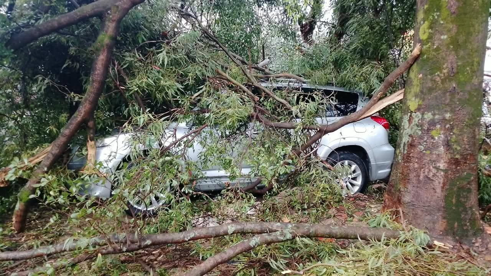
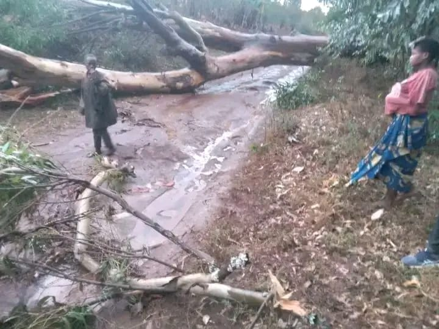
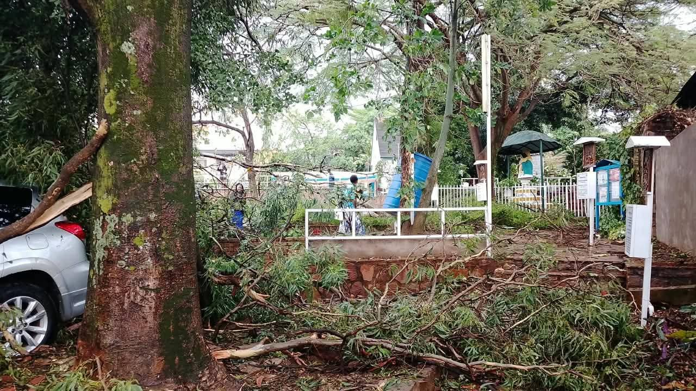
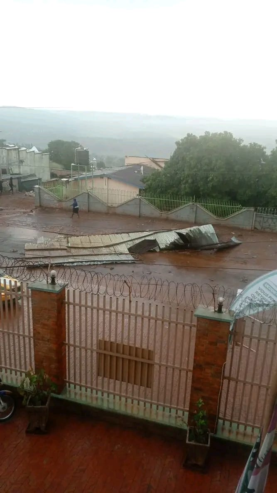
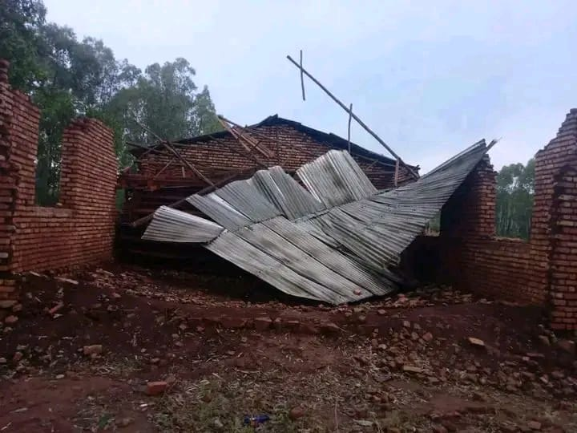
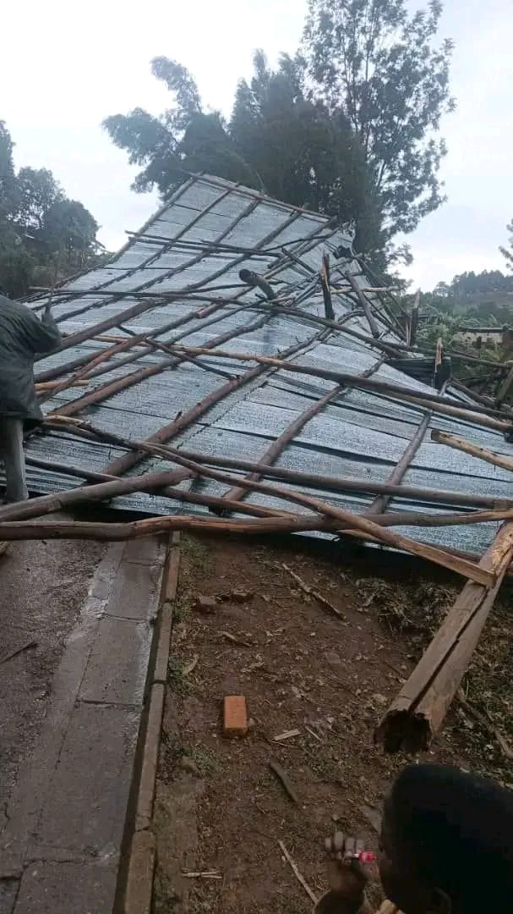
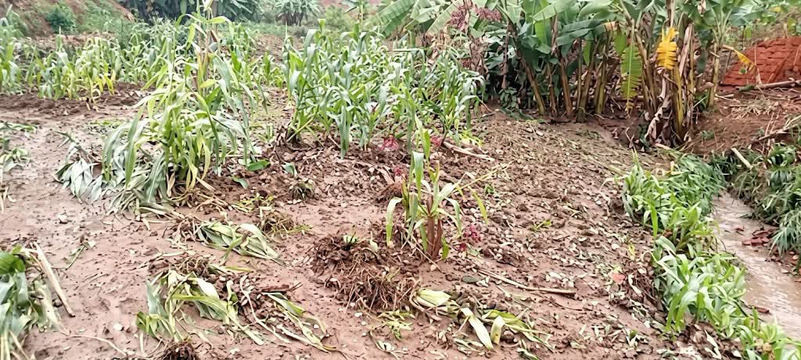

Des vents violents accompagnés de fortes pluies ont frappé plusieurs localités. Les images reçues par notre rédaction montrent des arbres déracinés, des toitures arrachées, des routes obstruées et des champs ravagés.

Des arbres arrachés, des routes coupées
Plusieurs arbres de grande taille n'ont pas résisté aux rafales. Dans une cour, l'un d'eux s'est abattu sur un véhicule garé en dessous, dont la vitre arrière est brisée. Dans un jardin aménagé autour d'une statue et d'une fontaine, de grosses branches brisées jonchent le sol et les allées.
Sur une route de terre détrempée, un tronc entier barre le passage : des habitants s'arrêtent, impuissants, devant l'obstacle. Ces arbres couchés compliquent la circulation et l'accès des secours et des riverains.


Des toitures emportées
Le vent a aussi soulevé des toits entiers. Dans une rue, des tôles ondulées arrachées d'une toiture gisent sur la chaussée, à côté d'une clôture surmontée de fil barbelé. Ailleurs, une charpente en bois a cédé et la toiture en tôle s'est affaissée sur les murs d'un bâtiment en briques, qui semble être un édifice en construction ou en cours de finition.
D'autres images montrent l'ensemble d'une toiture à terre, la structure de perches et de à nu, au bord d'une habitation. Quand la toiture est perdue, c'est tout l'abri d'une famille, d'une école ou d'un lieu de culte qui est fragilisé.



Des cultures couchées par la pluie
Dans les champs, le sol détrempé est parsemé de tiges brisées et de plants arrachés. Les cultures, couchées ou déracinées, laissent craindre des pertes pour les familles qui vivent de leur récolte, à l'approche de la saison culturale.

Quel lien avec le changement climatique ?
Il est difficile d'attribuer un épisode isolé au réchauffement de la planète. Mais les spécialistes du climat observent que, dans de nombreuses régions d'Afrique de l'Est, les pluies deviennent plus irrégulières et les épisodes violents plus fréquents : de longues périodes sèches, interrompues par des orages brusques et intents. Ces pluies tombent sur des sols souvent déjà fragilisés, ce qui favorise l'érosion, les glissements de terrain et la perte de récoltes.
Chaque épisode de ce type rappelle l'importance de s'adapter : planter des arbres adaptés pour protéger les sols et les pentes, entretenir les arbres proches des habitations, et renforcer les constructions.
- Ne vous abritez jamais sous un grand arbre pendant la tempête.
- Restez à l'intérieur d'un bâtiment solide et éloignez-vous des toitures en tôle et des fenêtres.
- Ne vous approchez pas des fils électriques tombés ou des arbres penchés.
- Après la tempête, ne circulez pas sur les routes obstruées et signalez les dégâts aux autorités locales.
- Faites fixer solidement les toitures (charpente et tôles) avant la saison des pluies.
Vous avez été touché ou vous avez des images de ces intempéries dans votre localité ? Envoyez-les-nous via la page Contact ou partagez-les avec le hashtag #Menyaplustv.
← Retour à Environnement et climat